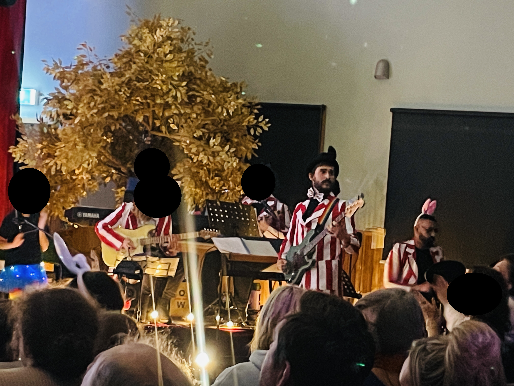
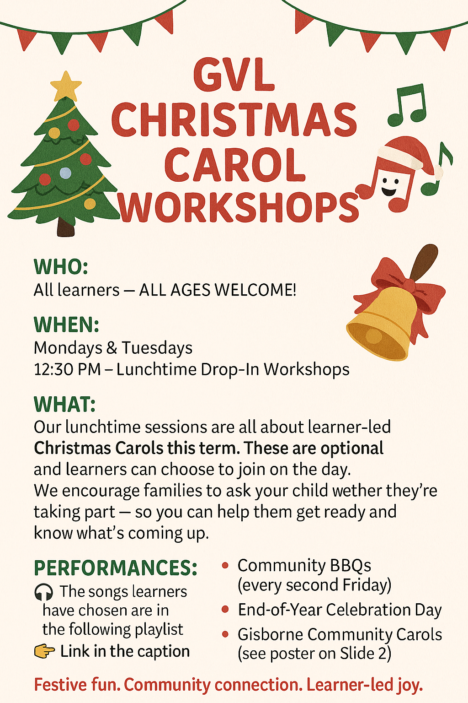

Performing Arts Portfolio
VIT-registered teacher with experience across early years, primary, and secondary contexts. My work is performance-driven and community-connected, using music and drama to build confidence, communication, collaboration, and pride in learning.
How I Teach Performing Arts
- Clear routines and expectations for practical spaces and rehearsals
- Inclusive entry points
- Explicit instruction + creative exploration
- Structured rehearsal cycles: practise → refine → perform → reflect
- Assessment through observation, performance, and reflection
- Student confidence and collaboration as deliberate outcomes
- Professional communication with families around progress and events
- Community-facing performances used as authentic learning contexts
Featured Work
School Musical – Music Direction, Performance & Acting Coaching
I contributed to the delivery of a large-scale school musical through a combined role in music direction and drama coaching. This included preparing students musically and theatrically for performance, supporting both individual skill development and ensemble cohesion for a public performance outcome.
My role
- Acting coaching: character development, voice, movement, stage presence
- Vocal coaching for actors and chorus, including pitching, blend, and confidence
- Music preparation: transcription and arrangement of musical material
- Instrumental direction: arranging and teaching parts for a student band
- Rehearsal structure integrating music, drama, and ensemble expectations
Evidence
Student band performing music prepared, arranged, and rehearsed for a whole-school musical. Image selected to demonstrate ensemble structure and music direction; students are not individually identifiable.
Alice in Wonderland Inquiry – Integrated Music, Drama & Literacy (Ages 4–6)
This inquiry-based project explored how young learners could bring a shared story world to life through music, drama, and performance. Over an eight-week sequence, learners engaged with Alice in Wonderland through scenes from the musical, film, and text, developing character understanding, ensemble skills, and performance confidence in preparation for a live community performance.
The inquiry was structured around a clear driving question — How can we bring our version of Wonderland to life through theatre, design, and performance? — and provided multiple entry points for learners to participate as performers, chorus members, designers, and promoters of the final show.
Teaching focus and structure
Learning experiences were intentionally sequenced to support young learners to explore character, voice, movement, and collaboration. Early sessions focused on building shared understanding of roles and ensemble expectations, followed by guided planning and rehearsal of short dramatic scenes and musical elements. These were refined through rehearsal, peer feedback, and repeated performance opportunities.
Curriculum and learning integration
The inquiry addressed the full music and drama curriculum within an authentic performance context. Learners developed skills in vocal expression, movement, use of space, and dramatic action, while also strengthening literacy through script work, persuasive writing for promotional skits, and oral language development. Collaboration and social learning were embedded throughout the project as learners worked in ensembles toward a shared outcome.
Community connection and outcomes
The project culminated in a live performance for the GVL community, including peer-created promotional scenes shared across the learning space. Families and community members were invited to engage with the process and final performance, reinforcing the value of authentic audience and real-world purpose in young learners’ creative work.
Whole-School Irish Music Inquiry – All Music Curriculum Addressed
I designed and led a whole-school inquiry using Irish traditional music as a shared musical context. All areas of the music curriculum were addressed within the inquiry through classroom music, aligned instrumental lessons, and inclusive lunchtime ensemble workshops.
Key design features
- Whole-school theme built around shared repertoire
- Inclusive participation: all instrumental students welcome
- Instrumental lessons aligned with classroom music learning
- Lunchtime workshops for ensemble development and extension
- Listening, performing, composing, and ensemble skills embedded in context
Evidence

Ensemble rehearsal using shared Irish repertoire.
Audio excerpt from a whole-school Irish music ensemble session. Audio-only used to prioritise student privacy.
Performance-Driven School Culture – Community Events
I embedded regular, purposeful performance opportunities into school life to build student confidence, ensemble skills, and strong connections between learners, families, and the wider community. Performances were planned intentionally and aligned with learning goals, rather than treated as stand-alone events.
Examples of events
- Fortnightly community BBQs featuring live student music
- Student pop bands (Grades 4–6)
- Whole-school Irish ensemble performances
- Performance evenings and school musical productions
- Seasonal events (Christmas and Easter) with families onsite
Evidence
Communication poster used to inform families about learner-led Christmas carol workshops and community performances.
Contact
Available for Performing Arts and classroom roles. Portfolio images and videos are placeholders until final assets are added. Student work is de-identified and used with permission where required.
- HammondToby25@gmail.com
- 0416 245 569
- Sunbury, VIC